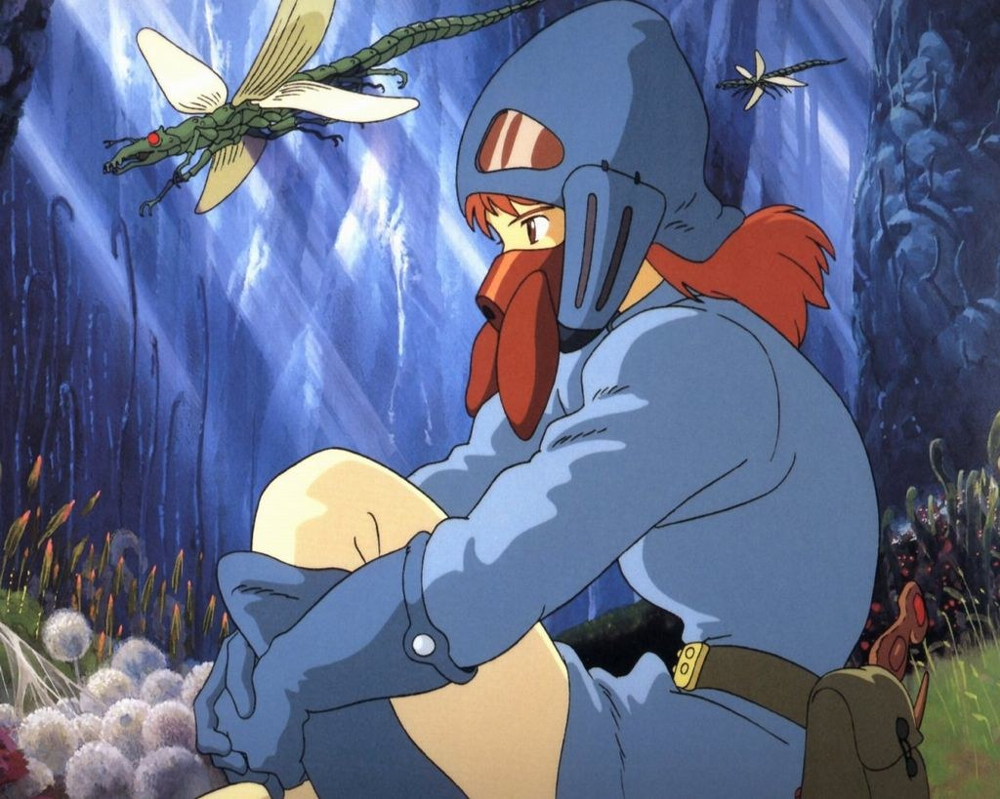
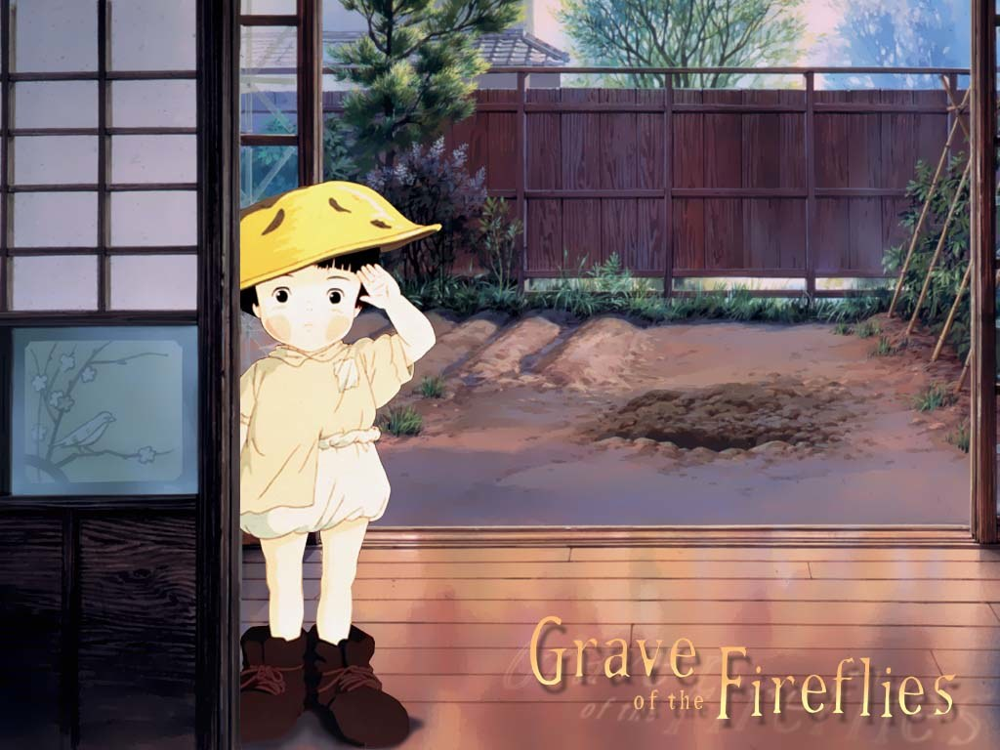

Animé


Lesson Ideas
Current Show
Modern Art Gallery
October 17 - November 14
4312 First Street
Anytown, State 54321
Materials for Teaching
Japanese Visual Culture (K-12)


Animation is not just for kids...
We often associate particular media with particular contents. So TV produced sitcoms. Videogames produced first person shooters. Internet produced blogs. But differing media can open up more avenues for expression. We see this most clearly when we look at how other cultures use media. In Japan, TV dramas are a mainstay and sitcoms are hard to find. Videogames are dominated by roleplaying. Internet is still generally accessed via cell phone rather than computer.
In our culture, we tend to associate animated films with Disney (mickey Mouse) and Warner Brothers (Bugs Bunny) or superheros and Saturday morning cartoons developed to occupy children while parents slept. So animated films have typically been viewed with some circumspection by adults and young adults. In Japan no such stigma was cultivated. In fact taking the early lead of American pioneers like Disney, Japanese animators have tried to make films that have consistently dealt issues that impact a broad age range. Animated films from Japan can approach some serious issues in ways that are in fact better tuned to their subject than live action films.
Animated films of war have a particular power that does not distract with violent images in the same way that live action films do because of their issues of special effects and realism.
Film Clips from Barefoot Gen and Grave of the Fireflies
Astro Boy=Mighty Atom clips and website:
http://www.colorado.edu/cas/TEA/curriculum/imaging-japanese-history/late-20th-century/index.html
Younger classes might enjoy Totoro, Kiki’s Delivery Service, or Laputa.
Useful Links for Teaching Animé
Tezuka Osamu and Astro Boy
http://www.colorado.edu/cas/TEA/curriculum/imaging-japanese-history/late-20th-century/index.html
The Teacher’s Companion to the Anime Companion
http://www.koyagi.com/teachers.html
A Parent's Guide to Anime
A web page set up to help parents better understand anime and choose titles for their children. The quality of the reviews is mixed but this is still a handy resource. Be aware that the "Intended for Mature Audiences" section of the reviews is not limited to sexual or violent content. This section includes anime that may be complex and difficult for children to understand.